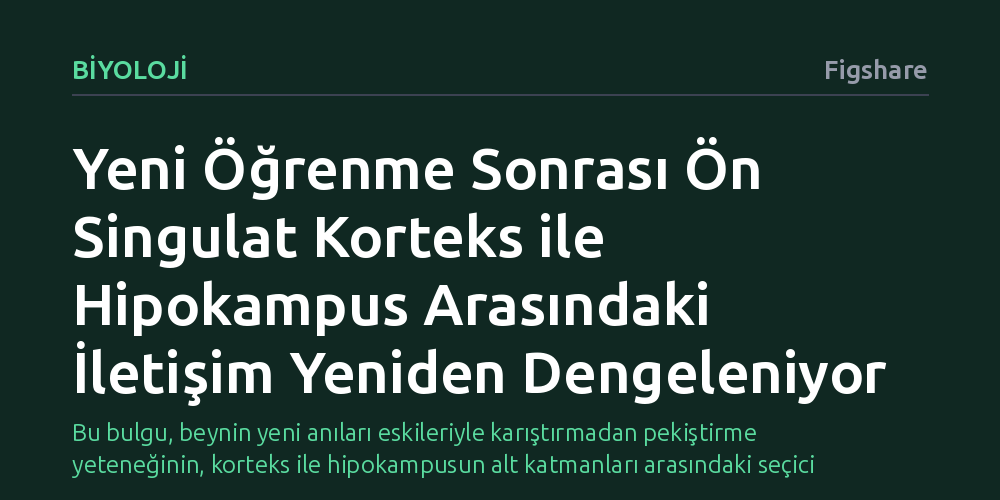

BIYOLOJI · Figshare · 2026-10-07
Araştırmacılar, yeni bir öğrenmenin ardından ön singulat korteks ile hipokampus arasındaki sinirsel iletişimin uyku sırasında nasıl değiştiğini inceledi. Öğrenme sonrasındaki uykuda bu iletişimin zayıfladığı ve özellikle hipokampusun yüzeysel nöronlarının baskılanarak bellek oluşumundaki katkılarının yeniden dengelendiği bulundu.
Bu bulgu, beynin yeni anıları eskileriyle karıştırmadan pekiştirme yeteneğinin, korteks ile hipokampusun alt katmanları arasındaki seçici baskılama ve dengeleme mekanizmasına dayandığını gösteriyor.

Canlılar her gün sayısız yeni deneyim yaşar. Birbirine çok benzeyen olayları, örneğin dün sabah kahvaltıda ne yediğimizle bu sabah ne yediğimizi birbirine karıştırmadan uzun vadeli hafızaya kaydetmek beynin en temel ama en az anlaşılan yeteneklerinden biridir. Bilim dünyasında uzun süredir bilinen gerçek, yeni deneyimlerin kalıcı hale gelmesi sürecinde, yani belleğin pekişmesinde, hipokampus adı verilen beyin bölgesinin hayati bir rol oynadığıdır. Dinlenme ve uyku hallerinde ortaya çıkan özel beyin dalgaları, gün içinde yaşananların beyinde adeta hızlı bir tekrarını yaparak bilginin kalıcı belleğe aktarılmasını sağlar.
Ancak son yıllardaki bulgular, hipokampusun homojen bir yapı olmadığını, özellikle bilgi çıkışının sağlandığı CA1 bölgesinde yer alan piramidal nöronların farklı alt katmanlara ayrıldığını ortaya koydu. Yüzeysel ve derin katmanlarda bulunan bu hücreler, uyku sırasındaki beyin dalgaları esnasında birbirinden farklı tepkiler veriyordu. Bu durum, belleğin özgüllüğünün hücresel katmanlar düzeyinde yönetildiğine işaret ediyordu.
Yanıtlanmayı bekleyen asıl soru ise şuydu: Beynin karar alma ve dikkat merkezi olan ön singulat korteks ile hipokampus arasındaki iletişim, yeni bir şey öğrenildiğinde uyku sırasında nasıl bir değişime uğruyordu? Beyin, yeni öğrenilen bilginin diğer anılarla karışmasını önlemek için nöron topluluklarının faaliyetlerini nasıl yeniden düzenliyordu? Bu çalışma, işte bu kritik sorunun peşine düşüyor.
Araştırmacılar bu soruyu yanıtlamak için beynin ön singulat korteksi ile hipokampusun CA1 bölgesi arasındaki eşzamanlı elektriksel etkileşimleri incelemeye aldı. Deneklerin hem öğrenme öncesindeki hem de öğrenme sonrasındaki uyku ve dinlenme dönemlerinde, keskin dalga dalgacıkları olarak adlandırılan yüksek frekanslı beyin salınımları kaydedildi. Bu iki bölge arasındaki bilgi akışını çözebilmek amacıyla genelleştirilmiş doğrusal model tabanlı bir kod çözücü kullanıldı. Bu modelleme sayesinde, korteksteki elektriksel sinyallerin hipokampustaki nöronları nasıl yönlendirdiği sayısal olarak takip edilebildi.
Yalnızca gözlemle yetinmeyen araştırmacılar, nedensel bir bağ kurabilmek için optogenetik yöntemine başvurdu. Bu yöntemde belirli nöron grupları genetik yolla ışığa duyarlı hale getirilir ve hassas lazer darbeleriyle doğrudan uyarılır. Araştırma ekibi, ön singulat korteksi optogenetik olarak uyardığında, hipokampusun yüzeysel ve derin katmanlarındaki nöronların ile aracı nöronların bu uyarıya nasıl tepki verdiğini doğrudan kaydetti.
Elde edilen sonuçlar dikkat çekici bir hücresel düzenlemeyi açığa çıkardı. İstatistiksel modelleme, normal şartlarda ön singulat korteks ile hipokampus arasında önceden var olan bir iletişim hattı bulunduğunu gösterdi. Ancak yeni bir öğrenme gerçekleştikten hemen sonraki uyku döneminde bu iletişimin belirgin biçimde zayıfladığı tespit edildi. Bu zayıflama, beynin öğrenilen bilginin ardından korteks ve hipokampus arasındaki iş bölümünü aktif olarak yeniden dağıttığına işaret ediyordu.
Daha da ilginci, bu zayıflamanın hipokampustaki tüm hücreleri eşit şekilde etkilememesiydi. Korteks ile hipokampusun derin katmanlarındaki nöronlar arasındaki iletişim, öğrenme öncesi ve sonrası uykuda büyük oranda sabit kalırken; asıl değişim yüzeysel katmandaki nöronlarda görüldü. Özellikle öğrenme görevi sırasında aktif olmayan yüzeysel nöronların korteksle olan iletişimi zayıflamıştı. Yani beyin, yeni öğrenmeyle ilgisi olmayan nöronların katkısını azaltarak sistemdeki dengeleri değiştiriyordu.
Optogenetik deneyler de bu seçici etkiyi doğruladı. Ön singulat korteks ışıkla uyarıldığında, hipokampusun yüzeysel katmanındaki nöronların baskılandığı, buna karşılık belirli bir aracı nöron grubunun harekete geçtiği gözlemlendi. Bu durum, korteksin hipokampustaki frenleyici aracı nöronları devreye sokarak yüzeysel nöronları bilinçli olarak susturduğunu ortaya koydu.
Bu bulgular, beynin anıları pekiştirme biçimine dair anlayışımıza yeni bir boyut kazandırıyor. Önceden uykuda gerçekleşen anı pekiştirme sürecinin tüm hipokampus boyunca tekdüze bir güçlenme mekanizması olduğu düşünülüyordu. Oysa bu çalışma, beynin ön kontrol merkezi olan korteksin, hipokampustaki belirli nöron katmanlarını seçici olarak bastırdığını gösteriyor. Yazarların ifadesiyle korteks, 'öğrenme ve bellek pekiştirilmesinde CA1 nöron topluluklarının katkısını yeniden dengeleme' rolünü üstleniyor.
Görev dışı kalan yüzeysel nöronların susturulması, yeni öğrenilen bilginin zihinde berrak bir şekilde ayrışmasını ve eski anılarla birbirine karışmamasını sağlıyor olabilir. Bellek süreçlerinde beynin bilgi kaydederken gürültüyü nasıl azalttığını ve alt katmanları nasıl yönettiğini anlamak, hem temel sinirbilim hem de yapay zekadaki bellek mimarileri açısından değerli ipuçları sunmaktadır.